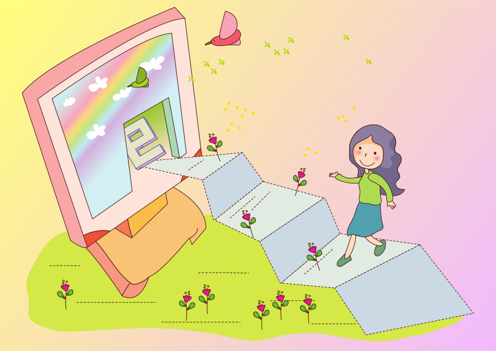

Your Ideas ➡ Tech
Rich Daley
What I do
USDL technologists
The idea
The right questions
Thinking like a machine
Iterative development

Why local micro-business?
https://www.fishpercolator.co.uk/
@fishpercolator